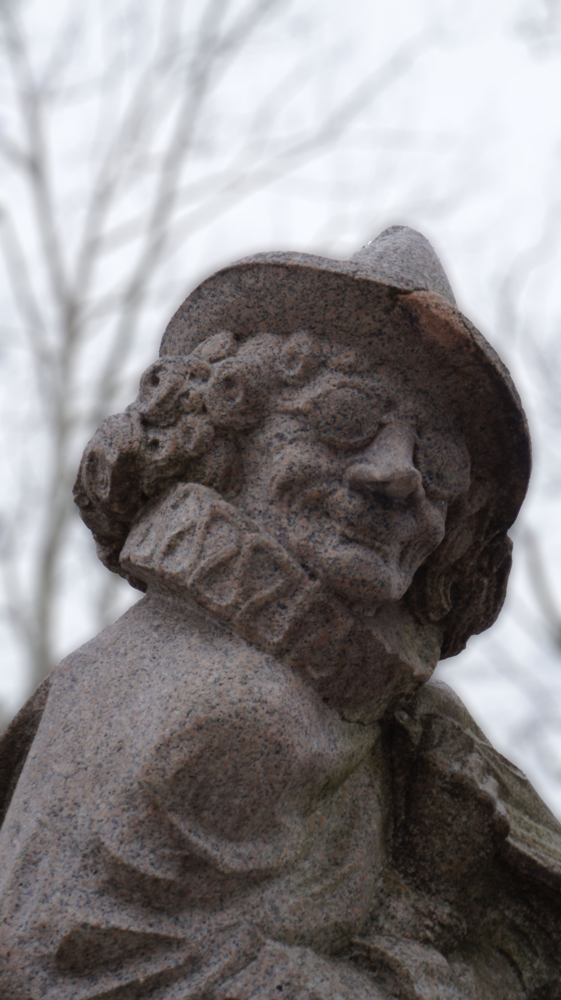
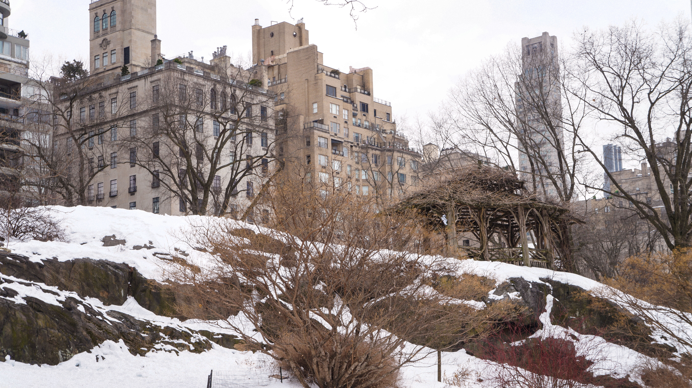

This Photo Uses the camera to capture a close-up Depth of field to focus on the statue's face. and ignore outside background distractions.

This photo uses the camera to capture a wide depth of field to focus on everything that's happening in the photo. not just zone in on one thing. We can see the trellis, the rocky slope, and the buildings all in Central Park.